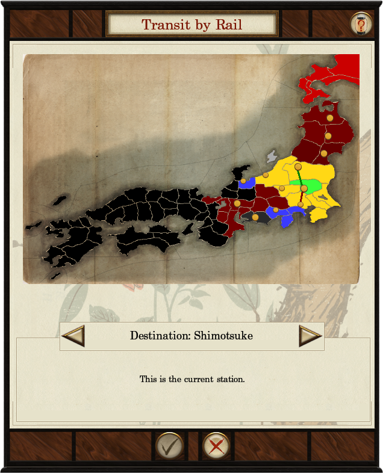

Railways
In Fall of the Samurai railways can be built in those provinces with the relevant province speciality building. Each clan is allowed one line each. Both armies and agents can use railways. To move to a station right-click on it in the same way you would any other target. Once at the station, a map will appear containing a list of possible destinations. Select one to move instantly move there. It is also possible to use stations belonging to those clans with whom military access has been negotiated. Rail travel can be disrupted by the sabotage of a station.